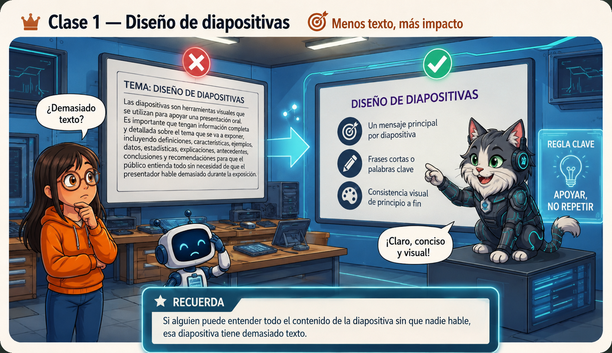
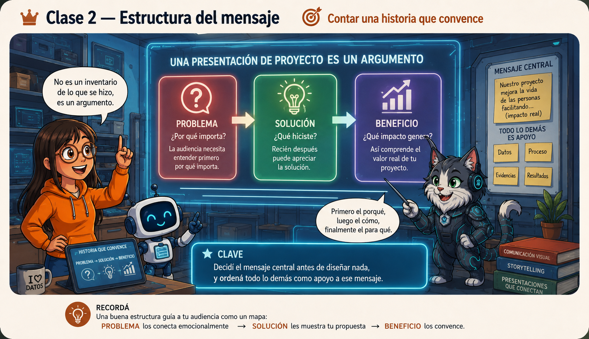
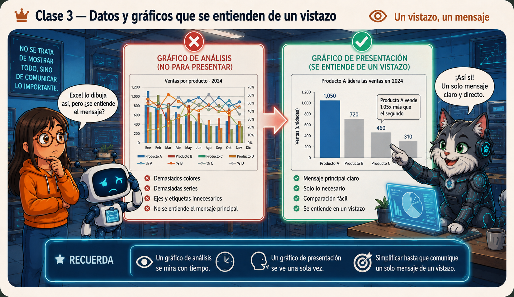
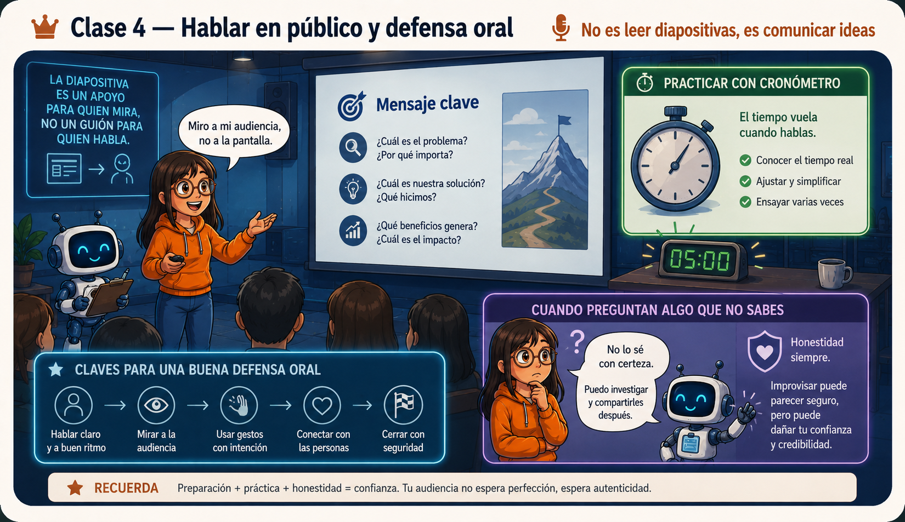

Diseño de diapositivas
Si alguien puede entender todo el contenido de la diapositiva sin que nadie hable, esa diapositiva tiene demasiado texto. Una diapositiva no resume el discurso, lo apoya — frases cortas o palabras clave, no oraciones completas. El detalle se dice, no se lee.
Un mensaje principal por diapositiva, jerarquía visual clara (lo más grande y lo que está arriba se percibe como más importante), y consistencia de tipografía, colores y estilo de principio a fin.

Estructura del mensaje
Una presentación de proyecto no es un inventario de lo que se hizo, es un argumento: problema → solución → beneficio. La audiencia necesita entender primero por qué importa, recién después puede apreciar la solución.
Un error común es dedicar el 80% del tiempo a explicar el proceso y llegar apurado al resultado. Conviene decidir primero cuál es el mensaje central que la audiencia debe recordar, y ordenar todo lo demás como apoyo a ese mensaje.

Datos y gráficos que se entienden de un vistazo
Un gráfico de análisis (el que arman en Excel) y un gráfico de presentación tienen propósitos distintos: uno se mira con tiempo y se interpreta, el otro se ve una sola vez, unos segundos, mientras alguien habla.
Un solo mensaje por gráfico ("el 70% prefiere X"), sin ejes ni etiquetas que no aportan, con color solo en el dato que importa y el resto en gris. Copiar y pegar el gráfico tal como sale de Excel casi nunca funciona para presentar — conviene rehacerlo pensando en que se va a proyectar a distancia.

Hablar en público y defensa oral
La diapositiva es un apoyo para quien mira, no un guion para quien habla. Si hace falta memorizar exactamente qué decir en cada diapositiva, probablemente tiene demasiado texto — vuelve a conectar con la Clase 1.
Practicar con cronómetro es clave: siempre se subestima cuánto lleva decir algo en voz alta. Y ante una pregunta inesperada, lo que se evalúa no es la omnisciencia — es cómo se responde. "No tenemos ese dato específico, pero podemos estimarlo con..." es mejor que inventar una respuesta con seguridad falsa.


Antes de comunicar hace falta tener algo que decir — y eso empieza con datos bien recolectados. Andá a la guía de Formularios para ver cómo se consiguen.